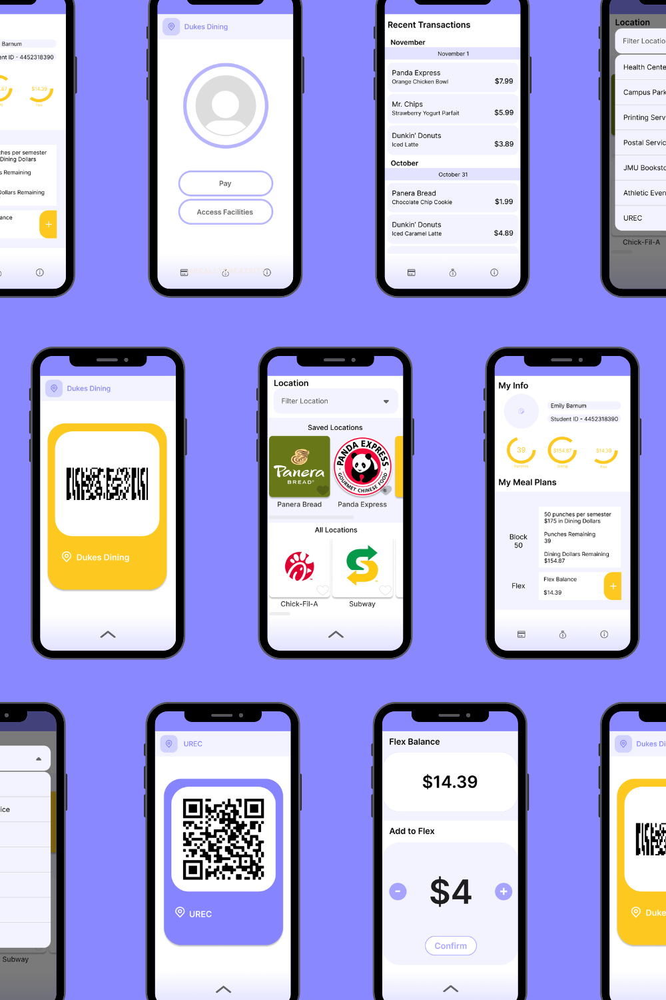
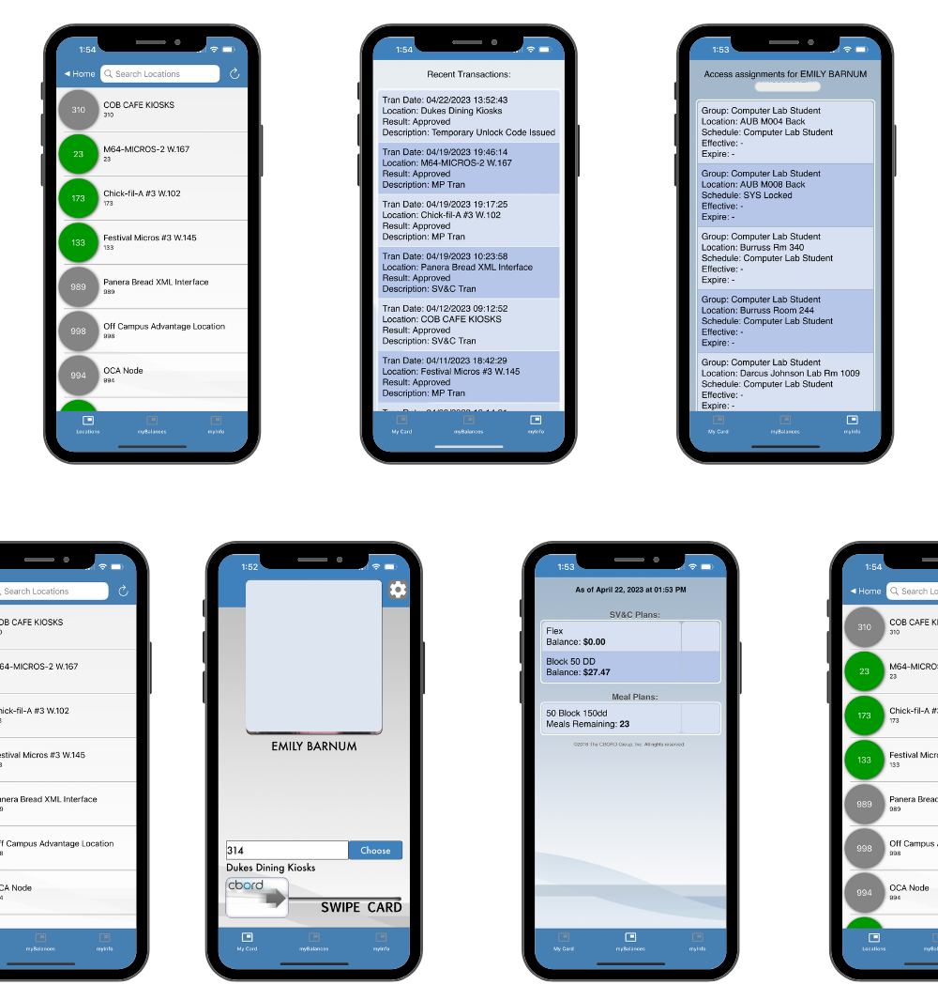
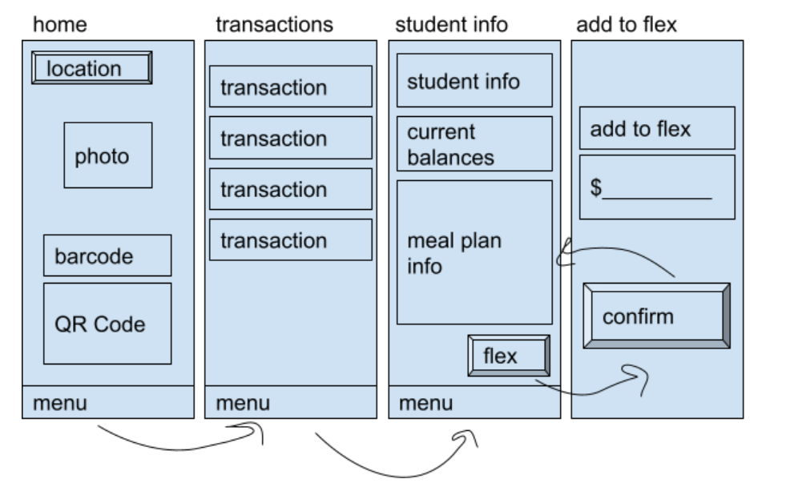

JMU Mobile ID App Redesign
Mobile ID App Redesign

Original Mobile ID App
Introduction
From August to December 2022, I had the opportunity to research user issues with the current JMU Mobile ID App and redesign the app using Figma. Through observation and research, I concluded that the current Mobile ID App interface is outdated, confusing to navigate, and buggy. I wanted to create an interface that removed all of the confusing location codes, simplified the scanning process, and added a feature for loading money into a dining plan.
Project Overview
Mobile ID is an application that allows users to purchase items, access facilities around campus, and check meal plan balances. This app is generally used by students who want the convenience of paying for meals at dining halls or swiping in and out of buildings from the convenience of their smartphone. Most students already have their phones out when waiting in lines to purchase their lunch or access the University Recreation Facilities. The convenience factor provided by Mobile ID is the app's greatest selling point.
Gathering Requirements
Information gathering was conducted using in-person interviews, naturalistic observation, and a Google survey. Naturalistic observation of students' usage of Mobile ID in dining hall lines gave a general sense that students preferred the app over swiping their JMU Access Cards. Furthermore, in-person interviews with users confirmed these naturalistic observations. Users of the app enjoy the utility it provides. When asked what they would change, most responses focused on the usability of the interface and the aesthetics of the interface. Many users stated the app appeared outdated. Some complained about the buggy interface. One user described his experience with a glitchy interface that made it impossible to purchase food during his Freshman year. Additionally, users described the annoyance of having to click on the MyInfo button before scanning the QR code. Another user agreed and added that the small size of the QR code made it difficult for the scanner to read at times. Furthermore, many users had no idea where to look for recent transactions on the app. A minority of people suggested extra features should be added such as printing functionality and the ability to add money to flex from the app. Using the Google survey, I compiled 16 user responses from a number of questions about the app. The general sentiment from this population was that the app performed its intended purpose but could use additional functionality and design could be greatly improved. These online responses mirrored the responses collected in-person during the initial interview process.
From the research conducted, I decided these changes should be prioritized:
Functional Changes
- Add functionality to use current location
- Add functionality to save favorite locations
- Add functionality to increase Flex balance
Aesthetic Changes
- Use JMU colors
- Improve navigation
- Add modals for scanning
- Remove confusing location codes
Lo-Fi Prototype
Based on the information gathered, I created a low fidelity prototype to address the issues presented. In this prototype, I outlined the basic functionality, layout, and interactions. This prototype went through many revisions before landing on the final high fidelity prototype made using Figma.
Lo-Fi Prototype